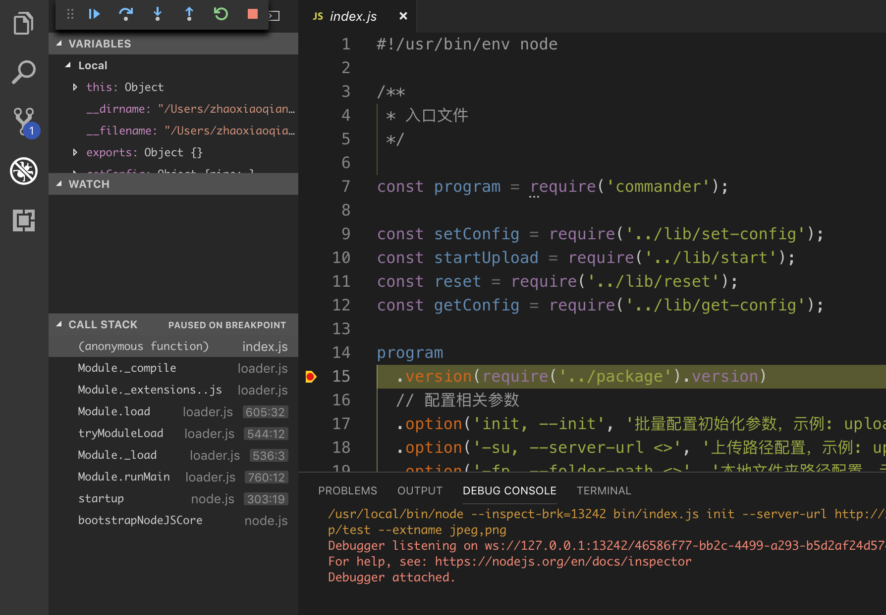

js 在端能力上，除了在浏览器中运行页面外还有一个很重要的分支，那就是在命令行中运行。前者有我们最熟悉的纯 Web 页面 和 App 中内嵌的页面，也有我们不太常用的基于 Electron 开发桌面应用。后者有前端工程的脚手架和文件批处理工具。
npm 全局安装一个包的时候到底偷偷摸摸做了那些事？
首先是从网上把这个包本身(敲黑板划重点：不包括依赖的包)下载下来；
然后根据参数下载依赖(依赖分 dependencies 和 devDependencies，具体出门左转npm)，安装的目录 Mac 下是 /usr/local/lib/node_modules；
如果依赖没问题会读取 package.json 中 bin 配置的每一项，然后把对应文件写入到 /usr/local/bin/ 目录下，这个目录下放的是全局命令的，这个路径可能因为系统的不同而不同，可以在环境变量配置文件查看。我们在命令行中敲的任何一个用户命令都要首先从这个文件夹开始查找。
例如 gulp 的 bin 配置是这样的: {"gulp": "./bin/gulp.js"}。gulp.js 中的内容：
#!/usr/bin/env node
require('gulp-cli')();
与浏览器端代码不同的是入口文件的第一行。env 是一个命令，参数是 node，就是在程序中用 nodejs 的引擎，也就是 v8 引擎，去执行下面的代码，这样就可以借助操作系统的能力，而不需要知道 node 装在哪里了。
一般安装全局包都需要 sudo，这货是干啥的？
我们看到上面有很多文件拷贝，而且涉及到 /usr/local/bin/ 这样的军机要地，而且在系统中不是每个文件都可以被执行的，这有涉及到文件的权限问题，这里不展开，想了解更多出门左转我的另一篇文章 Linux 笔记。
这么多事不是谁想干就让干的，sudo 通俗一点可以理解为赐下尚方宝剑，想动哪个就能动哪个，专业一点讲就是赋予一系列执行的权限。
这里有个细节，在拷贝 bin 配置中文件的时候是要去掉后缀名的，所以在一些 node cli 工具中，bin 目录下的 js 文件没有后缀名。
建一个 hw.js 文件，内如如下：
#!/usr/bin/env node
console.log('Hello world.');
然后拷贝到 /usr/local/bin/，然后就可以在命令行中敲个命令爽一下了：
hw
靠，报了个错：permission denied: cubao，没爽成。但是有没有发现，已经不是没有定义的命令那种提示了(command not found)，从信息来看是没有权限。给一下权限：
chmod a+x hw
再执行上面的命令，ok，妥妥的 Hello world。有人该不乐意了，个你整个 Hello world 嘚瑟个啥劲呀。你可别小看这个 Hellow world，简直是开启新世界的一把钥匙，你可以使用 nodejs 的一切功能。比如这样：
#!/usr/bin/env node
var fs = require('fs');
fs.copy
fs.past
fs.rename
fs.replace
一切文件的复制粘贴和简单改内容的操作都可以自动化了，当然上面 fs. 的那段代码是伪代码，你可以去 NodeJs 官网查看具体的 API，传送门:中文API。
配合 js 的原生功能，一些定时任务也可以写了。通过文件监听还能统计你写代码的时间。能干多少事就取决于你的 NodeJs 的掌握程度了。
${package root}
├── package.json 包文件
├── bin 命令执行的入口文件，对应 package.json 的 bin 配置
├── lib 功能代码，提供 bin 所需的一切
└── test 自动化测试脚本
package.json 的 bin 配置如下:
{
"bin": {
"package-name": "bin/index.js"
}
}
需要注意上面的 “package-name” 是推荐设置，实际上可以此处设置可以是任意的，比如 vue-cli 的 bin 配置就是 vue，并且在使用时也是以 bin 中的配置为准。bin 中可以配置多个全局指令常量，比如 vue-cli 有 vue 和 vue-list 以及 vue-init 三个指令，这种配置方法的好处是每条命令是独立的，可以借助 commander 单独设置参数校验规则(如必填等)。还有另一种方式是用参数指定不同的指令，优点是更规范和更好理解，通常一个包的命令应该以参数的形式出现而不是和包同级的指令，比如我写了一个上传多文件的工具，两种命令风格对比如下:
# 命令形式表示初始化
upload-file-init --url http://xx.xx.com
# 参数形式表示初始化
upload-file init --url http://xx.xx.com

命令行工具不在浏览器中运行，所以和传统的网页调试有很大的不同。用 VS Code 调试比较方便，首先在调试面板中配置 configurations:
{
"type": "node",
"request": "launch",
"name": "Launch Program",
"program": "${workspaceFolder}/bin/index.js",
"args": [
"config",
"--path",
"/home/usr/username",
// start 开始
// "start"
// 重置参数
// "reset"
],
}
program 是入口配置，args 是参数配置，关于命令行的参数使用在下一章中详细讲。
如果想在本地验证命令，可以在项目目录下执行 npm link，npm 会解析 package.json 中的 bin 配置，并将对应的文件软链到全局变量文件夹中。
cli 全称 Command Line Interface，在开发上有一些通用的技能和注意事项。下面带你快速收获这些技能包。
第一个必须掌握的 npm 包就是 commander，它能帮你提取命令行中输入的参数。
首先是固定参数 version ，通过配置就可以实现版本的输出:
const program = require('commander');
program
// 固定参数 version
.version(require('../package').version, '-v, --version')
.parse(process.argv);
运行如下:
commander-demo -v
commander-demo --version
# 输出: 1.0.2
此节的具体代码都可以在 demo 中找到。关于包的发布和管理请参考我的 npm 文章。
其次是参数设置 ，将你需要的参数写进 option 配置中，然后从 parse 方法中传入 process.argv 对象，program 对象下有有了你需要的参数了:
program
// 布尔值，注意缩写只能是一个字母
.option('-b, --boolean-input', '参数说明')
// 值必填输入，如果写了参数需要赋值
.option('-r, --required-input <>', '参数说明')
// 值可选输入，如果赋值了就提取字符串，如果只写参数就返回 true
.option('-o, --optional-input []', '参数说明')
.parse(process.argv);
console.log('booleanInput: ', program.booleanInput);
console.log('requiredInput: ', program.requiredInput);
console.log('optionalInput: ', program.optionalInput);
正常状态下在命令行运行时这样的:
commander-demo -b -r AAA -o BBB
# 输出如下
booleanInput: true
requiredInput: AAA
optionalInput: BBB
尖括号和方括号的区别是:
commander-demo
# 输出:
booleanInput: undefined
requiredInput: undefined
optionalInput: undefined
参数全部不填是没问题的，所有参数的默认值是 undefined，如果写了参数缺没有赋值就会报错。
commander-demo -r
# 输入如下报错信息
error: option `-r, --required-input <>' argument missing
commander-demo -o
# 输出:
optionalInput: true
commander-demo -o BBB
# 输出:
optionalInput: BBB
对于复杂的参数还可以指定一个预处理函数:
program
.option('-r, --range <>', '区间值，示例: 1..2', range)
.parse(process.argv);
function range(val) {
return val.split('..').map(Number);
}
console.log(JSON.stringify(program.range));
运行结果如下:
commander-demo -r 1..2
# 输出:
[1,2]
最后是指令 ，如果你编写的是一个复杂的命令行工具，那么一条指令可能不够用，用 command 方法可以分出多个子指令，command 与 action 之间设置 option，两个 command 不会相互干扰，在 action 中分流各自的逻辑。
program
.command('rm <dir>')
.option('-r, --required-input <>', '参数说明')
.action(function (dir, option) {
console.log(`remove ${dir}, requiredInput: ${option.requiredInput}`);
});
program
.command('mk <dir>')
.option('-o, --optional-input <>', '参数说明')
.action(function (dir, option) {
console.log(`make ${dir}, optionalInput: ${option.optionalInput}`);
});
// 此行一定要单独写
program.parse(process.argv);
运行结果:
commander-demo rm aa/bb -r AAA
# 输出:
remove aa/bb, requiredInput: AAA
commander-demo mk aa/bb -o AAA
# 输出:
make aa/bb, optionalInput: AAA
命令行中的表单，语法大体是这样:
const inquirer = require('inquirer')
const getAccount = await inquirer.prompt({
type: 'input',
name: 'account',
message: '(文本输入)What is the account?'
})
其中的 type 有这几种:
你可以在官方站点找到全部的 examples。
除了 type、name、message 之外还有以下其他属性可供使用:
用 termtosvg 工具可以将操作过程录制成 svg 动画，可以更直观的展示 cli 工具的用途。
上面是自己小打小闹的自己玩，如果想把自己的玩具分享给全世界的小伙伴怎么搞？其实建一个 npm 包就可以了，唯一不同的就是在第一行加上下面这行代码：
#!/usr/bin/env node
npm 包的内容可以参考我另一篇文章 npm，你可以完全手动完成然后发布，也可以用一些工具，比如 Yeoman：
sudo npm install -g yo
sudo npm install -g generator-cli-starter
yo cli-starter
注：Yeoman，直译“仆人”，一个通用的脚手架系统，更多信息参阅官网。
每次登陆远程服务器都要敲一串很长的命令，其实把这个命令直接新进文件(文件名是 ssh-relay)就可以：
// 内容
ssh 远程服务器地址
// 命令
ssh-relay
用来操作git的工具....持续编写中
/usr/bin/ruby -e "$(curl -fsSL https://raw.githubusercontent.com/Homebrew/install/master/install)"
sudo apt-get install libssl-dev
https://github.com/nodegit/nodegit http://127.0.0.1:9999/articles/cli/img/cli.png http://127.0.0.1:9999/articles/cli/img/chalk.svg
使用Termtosvg把Linux命令行中的会话录制成SVG动画
code to svg&t=seti&wt=none&l=auto&ds=true&dsyoff=20px&dsblur=68px&wc=true&wa=true&pv=56px&ph=56px&ln=false&fm=Hack&fs=14px&lh=133%25&si=false&es=2x&wm=false)